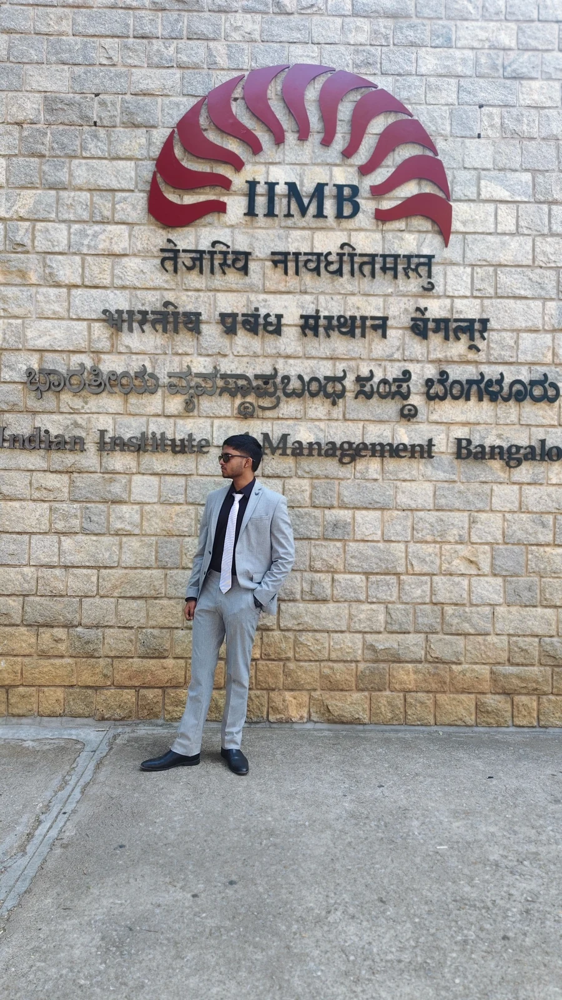
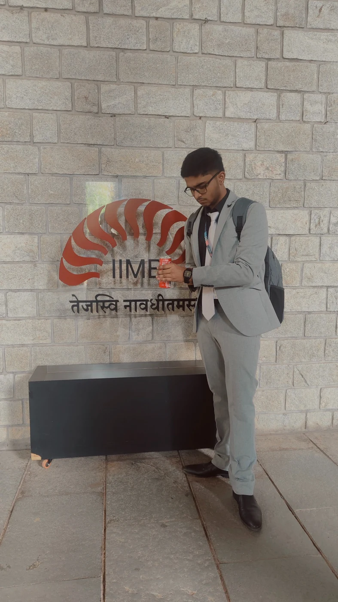
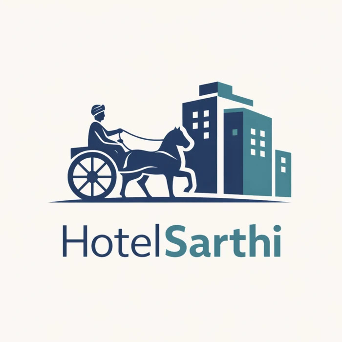
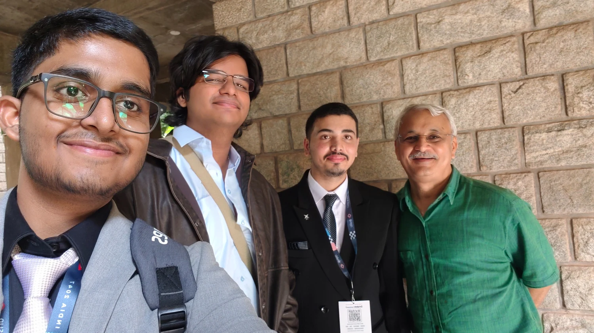

Business & strategy
Business analysis, market research, strategy, and business development.
BUSINESS. STRATEGY. TECHNOLOGY. EXECUTION.
I explore business challenges, develop digital solutions and turn ideas into practical outcomes.

02 / WHAT I BRING
Business analysis, market research, strategy, and business development.
Customer discovery, product development, digital models, and execution.
Positioning, competitor research, content, digital marketing, and growth.
Exploring useful applications of AI and technology to business challenges.
01 / A LITTLE ABOUT ME
I like working where business meets technology — understanding a problem, figuring out what matters, and building a thoughtful solution around it.
I’m pursuing a BBA in Digital Business & Entrepreneurship at IIM Bangalore. My work spans building a B2B SaaS product, improving a hospitality business’s digital presence, and developing strategy through case competitions.
I’m especially interested in B2B SaaS, business development, product thinking, go-to-market strategy, and practical applications of AI.
A little more on LinkedIn ↗
IN THEDifferent projects.
One learning curve.
Project and proposal figures are labelled by context; proposed targets are not represented as achieved operating results.
02 / HOW I WORK
Founder work across product thinking, customer conversations, onboarding, and business development.
HOTELSARTHI · 7 HOTELS USING THE PLATFORM See the work ↗Website development, digital presentation, and marketing content for Krishna Palace.
DIGITAL BUSINESS · HOSPITALITY See the work ↗Market, growth, and climate-finance proposals built through case competitions and team leadership.
IIM BANGALORE FINALIST · TISS FINAL ROUND See the work ↗03 / SELECTED WORK
A mix of products, business work, and strategy projects. Each one taught me something different about solving problems and getting ideas moving.

01 / PRODUCT↗Building a hotel-management platform, from customer discovery and product direction to onboarding and growth.
Open case study ↗Strengthening a hospitality business’s digital presence through its website, communication, and marketing assets.
Open case study ↗A five-city growth and go-to-market proposal for High Protein Milk, developed for Boardroom Brawlz at IIM Bangalore.
A blended-finance proposal exploring how capital could support a grid-scale battery storage pilot for India’s net-zero transition.
An international expansion and capacity strategy case covering market choices, operational constraints, and investment trade-offs.
Open case study ↗A specialist marketplace concept connecting experienced financial-services professionals with AI and FinTech product teams.
Open case study ↗Case-competition numbers, targets, and financials describe proposals or illustrative models unless explicitly stated as actual outcomes.
A WAY OF WORKING
Every project starts with a question worth understanding.
SCROLL TO EXPLORE · SWIPE ON MOBILE →Talk to people doing the work. Notice the friction behind the brief.
Turn what I learn into a product direction, a plan, or a testable idea.
Ship, share, and improve through the responses it creates.
04 / THE JOURNEY SO FAR
My path is still taking shape. The most valuable learning has come from building, speaking to users, working with teams, and trying to make ideas concrete.

MEET PEOPLE. SHARE IDEAS. KEEP BUILDING.BBA in Digital Business & Entrepreneurship. Exploring business fundamentals, digital models, and entrepreneurship.
EDUCATION · BENGALURUFocus areas include business operations, marketing and branding, competitor research, digital marketing, website and SEO, social media, and content strategy.
INTERNSHIP · BUSINESS OPERATIONS & MARKETINGBuilding a B2B hotel-management SaaS product and working across customer discovery, product development, onboarding, and business development.
PRODUCT · ENTREPRENEURSHIPWorked on digital business and marketing, including the website, digital content, and online presence of a hospitality business.
HOSPITALITY · DIGITAL BUSINESSLed peer-learning sessions introducing 40+ students to practical AI tools and ways to use them in their work.
PEER LEARNING · AI LITERACY05 / EDUCATION
BBA in Digital Business & Entrepreneurship
06 / SKILLS & INTERESTS
Peer learning: Led and represented a group of 40+ students at Modern Public School in practical AI skills sessions.
05 / RECOGNITION & PARTICIPATION
ScopeEdge was selected among 10 finalist teams for the Akshayakalpa Organics case challenge at Drishti 2026.
Qualified for the final round with a climate-finance proposal on bridging the finance gap for a net-zero India.
Participated in the strategy challenge focused on diagnosing business problems, negotiating resources, and building strategies.
View participation certificate ↗Recognition is stated according to the available confirmation or certificate. Participation is not presented as a ranking or finalist result.
06 / START A CONVERSATION
I’m always glad to connect with people building thoughtful products, exploring new ideas, or working on interesting business challenges.
Let’s connect on LinkedIn ↗